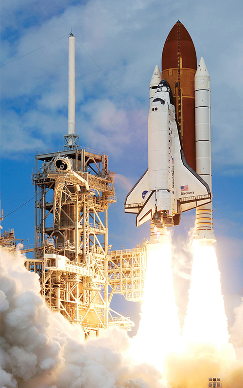

•<--<---Space--->-->•
What is Space?---------------
-Outer space, commonly referred to simply as space, is the expanse that exists beyond Earth and its atmosphere and between celestial bodies. Outer space is not completely empty; it is a near-perfect vacuum containing a low density of particles, predominantly a plasma of hydrogen and helium as well as electromagnetic radiation, magnetic fields, neutrinos, dust, and cosmic rays. The baseline temperature of outer space, as set by the background radiation from the Big Bang, is 2.7 kelvins (−270 °C; −455 °F).-
When did we start discovering space?-----
Oct. 4, 1957
On Oct. 4, 1957, the Soviets launched the first artificial satellite, Sputnik 1, into space. Four years later on April 12, 1961, Russian Lt. Yuri Gagarin became the first human to orbit Earth inVostok 1 
What is the importance of discovering space to us Humans?
Space exploration is crucial for increasing our understanding of life in the cosmos, developing science, advancing technology, inspiring future generations, and tackling global concerns. Even while space travel may be expensive, the rewards are infinite and the potential for discoveries is limitless.
The Advantages of discovering space>>>>>>>>
Protecting our planet and our environment
Satellites provide data on climate change, measure pollution, and help protect our planet.
Gives advance information to study and research to make an advance decision and avoid harm
Improving health care
Making scientific discoveries
Providing important information to research therefore, advancing
For more information, click here >Wikipedia